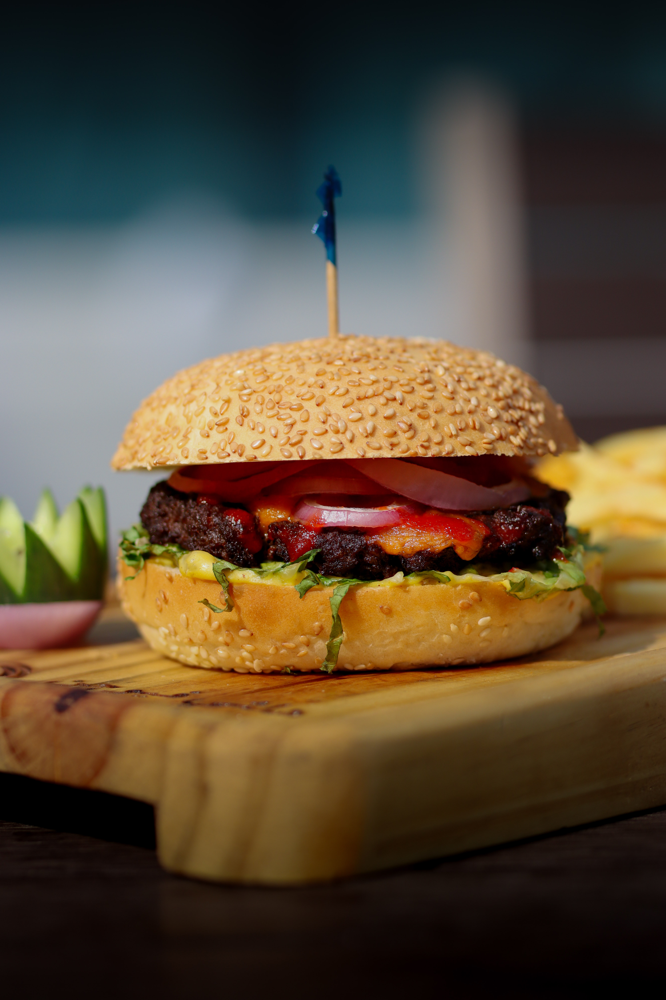
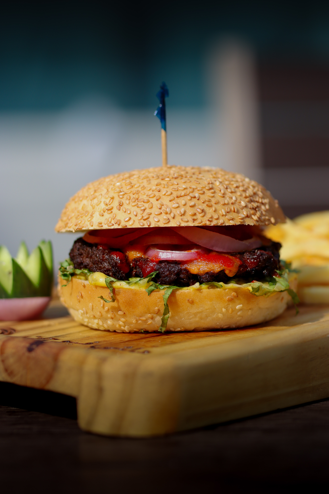

About
It started as an hobby,Photography is my creative escape, a way to see the world through a different lens—literally and figuratively. I enjoy capturing raw emotions, fleeting moments, and the unnoticed details that make life unique. From dynamic street scenes to serene landscapes, my work is a blend of curiosity and storytelling. Every shot is an experiment, a memory frozen in time, and a reflection of how I see the world.
 

This shot highlights the rich textures, vibrant colors, and mouthwatering appeal of a perfectly crafted burger. The shallow depth of field draws focus to the juicy patty and fresh ingredients, while natural lighting enhances its warmth and depth, making it as tempting as it looks.

This shot captures the crisp, flaky layers of freshly baked croissants, presented with a warm, artisanal touch. The contrast between the golden pastries and the dark background enhances their texture and richness, making the image both inviting and elegant. A moment of pure indulgence, frozen in time.

This portrait captures the quiet intensity of nature, freezing a moment of deep contemplation. The sharp details highlight the monkey’s expressive eyes and textured fur, while the soft, blurred background draws attention to its presence. A raw and unfiltered glimpse into the wild.

In this shot of the BMW X5, I focused on capturing the car's striking headlights, a standout feature of its design. By positioning the vehicle off-center, I was able to create a dynamic composition that highlights the sharp details and illumination of the headlights while also allowing the surrounding elements to complement the overall scene. The soft background ensures the focus remains on the headlights' intricate design, showcasing their bold and modern look. This approach emphasizes the X5's sophisticated aesthetics while maintaining a sense of movement and energy in the image.
This photograph captures a sleek black SUV, against a serene dusk skyline. The warm glow of the taillights contrasts with the cool tones of the evening, adding a dynamic yet moody feel. The blurred silhouette of a distant mosque enhances the depth and ambiance, creating a sense of place and time. The composition, with the vehicle positioned slightly off-center, adds balance and movement. A strong addition to your portfolio, showcasing your eye for automotive photography and atmospheric storytelling.

This vibrant photograph captures a festive holiday scene with a rich blend of warm tones and bokeh lights in the background. A bottle of sangria, adorned with a red ribbon, sits elegantly beside a lush floral arrangement of red and white flowers intertwined with fresh green pine. The golden ornament adds a subtle touch of luxury, enhancing the celebratory mood. The composition balances the elements beautifully, making this a strong addition to your portfolio, showcasing your talent for capturing warmth, depth, and seasonal ambiance in still life photography.